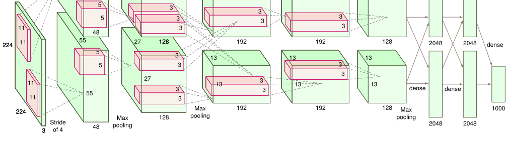
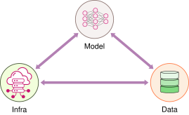
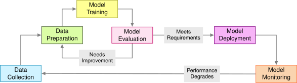
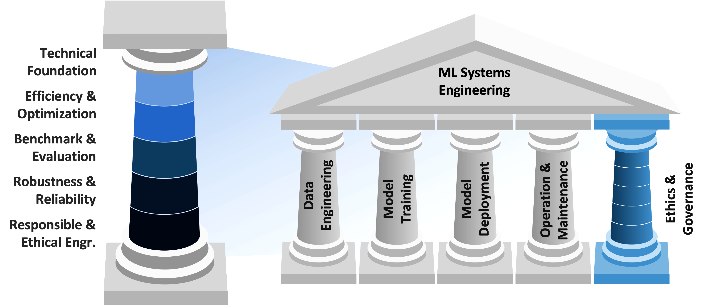

1 Introduction
DALL·E 3 Prompt: A detailed, rectangular, flat 2D illustration depicting a roadmap of a book’s chapters on machine learning systems, set on a crisp, clean white background. The image features a winding road traveling through various symbolic landmarks. Each landmark represents a chapter topic: Introduction, ML Systems, Deep Learning, AI Workflow, Data Engineering, AI Frameworks, AI Training, Efficient AI, Model Optimizations, AI Acceleration, Benchmarking AI, On-Device Learning, Embedded AIOps, Security & Privacy, Responsible AI, Sustainable AI, AI for Good, Robust AI, Generative AI. The style is clean, modern, and flat, suitable for a technical book, with each landmark clearly labeled with its chapter title.
Purpose
What does it mean to engineer machine learning systems—not just design models?
As machine learning becomes deeply embedded in the fabric of modern technology, it is no longer sufficient to treat it purely as an algorithmic or theoretical pursuit. We start by framing the field of Machine Learning Systems Engineering as a discipline that unites the science of learning with the practical realities of deployment, scale, and infrastructure. It explores how this emerging discipline extends beyond model development to encompass the full lifecycle of intelligent systems—from data to deployment, from theory to engineering practice. Understanding this perspective is essential for anyone seeking to build AI systems that are not only powerful, but also reliable, efficient, and grounded in real-world constraints.
1.1 AI Pervasiveness
Chapter connections
→ Key AI Applications (§\(\ref{sec-ai-good-key-ai-applications-d79f}\)): explores transformative applications of AI in modern agriculture
→ Overview (§\(\ref{sec-dl-primer-overview-3619}\)): the pervasiveness of AI in modern society and technology
→ Overview (§\(\ref{sec-ai-good-overview-a2ec}\)): essential mathematical foundations for neural networks
→ The Evolution to Deep Learning (§\(\ref{sec-dl-primer-evolution-deep-learning-e04f}\)): essential mathematical foundations for neural networks
Artificial Intelligence (AI) has emerged as one of the most transformative forces in human history. From the moment we wake up to when we go to sleep, AI systems invisibly shape our world. They manage traffic flows in our cities, optimize power distribution across electrical grids, and enable billions of wireless devices to communicate seamlessly. In hospitals, AI analyzes medical images and helps doctors diagnose diseases. In research laboratories, it accelerates scientific discovery by simulating molecular interactions and processing vast datasets from particle accelerators. In space exploration, it helps rovers navigate distant planets and telescopes detect new celestial phenomena.
Throughout history, certain technologies have fundamentally transformed human civilization, defining their eras. The 18th and 19th centuries were shaped by the Industrial Revolution, where steam power and mechanization transformed how humans could harness physical energy. The 20th century was defined by the Digital Revolution, where the computer and internet transformed how we process and share information. Now, the 21st century appears to be the era of Artificial Intelligence, a shift noted by leading thinkers in technological evolution (Brynjolfsson and McAfee 2014; Domingos 2016).
The vision driving AI development extends far beyond the practical applications we see today. We aspire to create systems that can work alongside humanity, enhancing our problem-solving capabilities and accelerating scientific progress. Imagine AI systems that could help us understand consciousness, decode the complexities of biological systems, or unravel the mysteries of dark matter. Consider the potential of AI to help address global challenges like climate change, disease, or sustainable energy production. This is not just about automation or efficiency—it’s about expanding the boundaries of human knowledge and capability.
The impact of this revolution operates at multiple scales, each with profound implications. At the individual level, AI personalizes our experiences and augments our daily decision-making capabilities. At the organizational level, it transforms how businesses operate and how research institutions make discoveries. At the societal level, it reshapes everything from transportation systems to healthcare delivery. At the global level, it offers new approaches to addressing humanity’s greatest challenges, from climate change to drug discovery.
What makes this transformation unique is its unprecedented pace. While the Industrial Revolution unfolded over centuries and the Digital Revolution over decades, AI capabilities are advancing at an extraordinary rate. Technologies that seemed impossible just years ago, including systems that can understand human speech, generate novel ideas, or make complex decisions, are now commonplace. This acceleration suggests we are only beginning to understand how profoundly AI will reshape our world.
We stand at a historic inflection point. Just as the Industrial Revolution required us to master mechanical engineering to harness the power of steam and machinery, and the Digital Revolution demanded expertise in electrical and computer engineering to build the internet age, the AI Revolution presents us with a new engineering challenge. We must learn to build systems that can learn, reason, and potentially achieve superhuman capabilities in specific domains.
1.2 AI and ML Basics
Chapter connections
→ Overview (§\(\ref{sec-dl-primer-overview-3619}\)): essential mathematical foundations for neural networks
→ The Evolution to Deep Learning (§\(\ref{sec-dl-primer-evolution-deep-learning-e04f}\)): essential mathematical foundations for neural networks
→ Overview (§\(\ref{sec-ml-systems-overview-5d7e}\)): fundamental concepts driving ML system design
→ Neural Network Fundamentals (§\(\ref{sec-dl-primer-neural-network-fundamentals-63b9}\)): fundamental concepts driving ML system design
The exploration of artificial intelligence’s transformative impact across society presents a fundamental question: How can we create these intelligent capabilities? Understanding the relationship between AI and ML provides the theoretical and practical framework necessary to address this question.
Artificial Intelligence represents the systematic pursuit of understanding and replicating intelligent behavior—specifically, the capacity to learn, reason, and adapt to new situations. It encompasses fundamental questions about the nature of intelligence, knowledge, and learning. How do we recognize patterns? How do we learn from experience? How do we adapt our behavior based on new information? AI as a field explores these questions, drawing insights from cognitive science, psychology, neuroscience, and computer science.
Machine Learning, in contrast, constitutes the methodological approach to creating systems that demonstrate intelligent behavior. Instead of implementing intelligence through predetermined rules, machine learning systems utilize gradient descent1 and other optimization techniques to identify patterns and relationships. This methodology reflects fundamental learning processes observed in biological systems. For instance, object recognition in machine learning systems parallels human visual learning processes, requiring exposure to numerous examples to develop robust recognition capabilities. Similarly, natural language processing systems acquire linguistic capabilities through extensive analysis of textual data.
The relationship between AI and ML exemplifies the connection between theoretical understanding and practical engineering implementation observed in other scientific fields. For instance, physics provides the theoretical foundation for mechanical engineering’s practical applications in structural design and machinery, while AI’s theoretical frameworks inform machine learning’s practical development of intelligent systems. Similarly, electrical engineering’s transformation of electromagnetic theory into functional power systems parallels machine learning’s implementation of intelligence theories into operational ML systems.
Artificial Intelligence (AI): The goal of creating machines that can match or exceed human intelligence—representing humanity’s quest to build systems that can think, reason, and adapt.
Machine Learning (ML): The scientific discipline of understanding how systems can learn and improve from experience—providing the theoretical foundation for building intelligent systems.
The emergence of machine learning as a viable scientific discipline approach to artificial intelligence resulted from extensive research and fundamental paradigm shifts in the field. The progression of artificial intelligence encompasses both theoretical advances in understanding intelligence and practical developments in implementation methodologies. This development mirrors the evolution of other scientific and engineering disciplines—from mechanical engineering’s advancement from basic force principles to contemporary robotics, to electrical engineering’s progression from fundamental electromagnetic theory to modern power and communication networks. Analysis of this historical trajectory reveals both the technological innovations leading to current machine learning approaches and the emergence of deep reinforcement learning2 that inform contemporary AI system development.
1.3 AI Evolution
Chapter connections
→ Overview (§\(\ref{sec-dl-primer-overview-3619}\)): essential mathematical foundations for neural networks
→ The Evolution to Deep Learning (§\(\ref{sec-dl-primer-evolution-deep-learning-e04f}\)): essential mathematical foundations for neural networks
→ Training Systems (§\(\ref{sec-ai-training-training-systems-e99c}\)): the progression of AI from early innovations to modern systems
→ Overview (§\(\ref{sec-ai-frameworks-overview-7fa2}\)): the evolution of AI from early innovations to breakthroughs
The evolution of AI, depicted in the timeline shown in Figure fig-ai-timeline, highlights key milestones such as the development of the perceptron3 in 1957 by Frank Rosenblatt, a foundational element for modern neural networks. Imagine walking into a computer lab in 1965. You’d find room-sized mainframes running programs that could prove basic mathematical theorems or play simple games like tic-tac-toe. These early artificial intelligence systems, while groundbreaking for their time, were a far cry from today’s machine learning systems that can detect cancer in medical images or understand human speech. The timeline shows the progression from early innovations like the ELIZA chatbot in 1966, to significant breakthroughs such as IBM’s Deep Blue defeating chess champion Garry Kasparov in 1997. More recent advancements include the introduction of OpenAI’s GPT-3 in 2020 and GPT-4 in 2023, demonstrating the dramatic evolution and increasing complexity of AI systems over the decades.
Let’s explore how we got here.
1.3.1 Symbolic AI Era
The story of machine learning begins at the historic Dartmouth Conference in 1956, where pioneers like John McCarthy, Marvin Minsky, and Claude Shannon first coined the term “artificial intelligence.” Their approach was based on a compelling idea: intelligence could be reduced to symbol manipulation. Consider Daniel Bobrow’s STUDENT system from 1964, one of the first AI programs that could solve algebra word problems. It was one of the first AI programs to demonstrate natural language understanding by converting English text into algebraic equations, marking an important milestone in symbolic AI.
Problem: "If the number of customers Tom gets is twice the
square of 20% of the number of advertisements he runs, and
the number of advertisements is 45, what is the number of
customers Tom gets?"
STUDENT would:
1. Parse the English text
2. Convert it to algebraic equations
3. Solve the equation: n = 2(0.2 × 45)²
4. Provide the answer: 162 customersEarly AI like STUDENT suffered from a fundamental limitation: they could only handle inputs that exactly matched their pre-programmed patterns and rules. Imagine a language translator that only works when sentences follow perfect grammatical structure; even slight variations, such as changing word order, using synonyms, or natural speech patterns, would cause the STUDENT to fail. This “brittleness” meant that while these solutions could appear intelligent when handling very specific cases they were designed for, they would break down completely when faced with even minor variations or real-world complexity. This limitation wasn’t just a technical inconvenience—it revealed a deeper problem with rule-based approaches to AI: they couldn’t genuinely understand or generalize from their programming, they could only match and manipulate patterns exactly as specified.
1.3.2 Expert Systems Era
By the mid-1970s, researchers realized that general AI was too ambitious. Instead, they focused on capturing human expert knowledge in specific domains. MYCIN, developed at Stanford, was one of the first large-scale expert systems designed to diagnose blood infections.
Rule Example from MYCIN:
IF
The infection is primary-bacteremia
The site of the culture is one of the sterile sites
The suspected portal of entry is the gastrointestinal tract
THEN
Found suggestive evidence (0.7) that infection is bacteroidWhile MYCIN represented a major advance in medical AI with its 600 expert rules for diagnosing blood infections, it revealed fundamental challenges that still plague ML today. Getting domain knowledge from human experts and converting it into precise rules proved incredibly time-consuming and difficult—doctors often couldn’t explain exactly how they made decisions. MYCIN struggled with uncertain or incomplete information, unlike human doctors who could make educated guesses. Perhaps most importantly, maintaining and updating the rule base became exponentially more complex as MYCIN grew, as adding new rules frequently conflicted with existing ones, while medical knowledge itself continued to evolve. These same challenges of knowledge capture, uncertainty handling, and maintenance remain central concerns in modern machine learning, even though we now use different technical approaches to address them.
1.3.3 Statistical Learning Era
The 1990s marked a radical transformation in artificial intelligence as the field moved away from hand-coded rules toward statistical learning approaches. This wasn’t a simple choice—it was driven by three converging factors that made statistical methods both possible and powerful. The digital revolution meant massive amounts of data were suddenly available to train the algorithms. Moore’s Law4 delivered the computational power needed to process this data effectively. And researchers developed new algorithms like Support Vector Machines and improved neural networks that could actually learn patterns from this data rather than following pre-programmed rules. This combination fundamentally changed how we built AI: instead of trying to encode human knowledge directly, we could now let machines discover patterns automatically from examples, leading to more robust and adaptable AI.
Consider how email spam filtering evolved:
Rule-based (1980s):
IF contains("viagra") OR contains("winner") THEN spam
Statistical (1990s):
P(spam|word) = (frequency in spam emails) / (total frequency)
Combined using Naive Bayes:
P(spam|email) ∝ P(spam) × ∏ P(word|spam)The move to statistical approaches fundamentally changed how we think about building AI by introducing three core concepts that remain important today. First, the quality and quantity of training data became as important as the algorithms themselves. AI could only learn patterns that were present in its training examples. Second, we needed rigorous ways to evaluate how well AI actually performed, leading to metrics that could measure success and compare different approaches. Third, we discovered an inherent tension between precision (being right when we make a prediction) and recall (catching all the cases we should find), forcing designers to make explicit trade-offs based on their application’s needs. For example, a spam filter might tolerate some spam to avoid blocking important emails, while medical diagnosis might need to catch every potential case even if it means more false alarms.
Table tbl-ai-evolution-strengths encapsulates the evolutionary journey of AI approaches we have discussed so far, highlighting the key strengths and capabilities that emerged with each new paradigm. As we move from left to right across the table, we can observe several important trends. We will talk about shallow and deep learning next, but it is useful to understand the trade-offs between the approaches we have covered so far.
| Aspect | Symbolic AI | Expert Systems | Statistical Learning | Shallow / Deep Learning |
|---|---|---|---|---|
| Key Strength | Logical reasoning | Domain expertise | Versatility | Pattern recognition |
| Best Use Case | Well-defined, rule-based problems | Specific domain problems | Various structured data problems | Complex, unstructured data problems |
| Data Handling | Minimal data needed | Domain knowledge-based | Moderate data required | Large-scale data processing |
| Adaptability | Fixed rules | Domain-specific adaptability | Adaptable to various domains | Highly adaptable to diverse tasks |
| Problem Complexity | Simple, logic-based | Complicated, domain- specific | Complex, structured | Highly complex, unstructured |
The table serves as a bridge between the early approaches we’ve discussed and the more recent developments in shallow and deep learning that we’ll explore next. It sets the stage for understanding why certain approaches gained prominence in different eras and how each new paradigm built upon and addressed the limitations of its predecessors. Moreover, it illustrates how the strengths of earlier approaches continue to influence and enhance modern AI techniques, particularly in the era of foundation models.
1.3.4 Shallow Learning Era
The 2000s marked a fascinating period in machine learning history that we now call the ``shallow learning’’ era. To understand why it’s “shallow,” imagine building a house: deep learning (which came later) is like having multiple construction crews working at different levels simultaneously, each crew learning from the work of crews below them. In contrast, shallow learning typically had just one or two levels of processing, similar to having just a foundation crew and a framing crew.
During this time, several powerful algorithms dominated the machine learning landscape. Each brought unique strengths to different problems: Decision trees provided interpretable results by making choices much like a flowchart. K-nearest neighbors made predictions by finding similar examples in past data, like asking your most experienced neighbors for advice. Linear and logistic regression offered straightforward, interpretable models that worked well for many real-world problems. Support Vector Machines (SVMs) excelled at finding complex boundaries between categories using the “kernel trick”—imagine being able to untangle a bowl of spaghetti into straight lines by lifting it into a higher dimension. These algorithms formed the foundation of practical machine learning.
Consider a typical computer vision solution from 2005:
1. Manual Feature Extraction
- SIFT (Scale-Invariant Feature Transform)
- HOG (Histogram of Oriented Gradients)
- Gabor filters
2. Feature Selection/Engineering
3. "Shallow" Learning Model (e.g., SVM)
4. Post-processingWhat made this era distinct was its hybrid approach: human-engineered features combined with statistical learning. They had strong mathematical foundations (researchers could prove why they worked). They performed well even with limited data. They were computationally efficient. They produced reliable, reproducible results.
Take the example of face detection, where the Viola-Jones algorithm (2001) achieved real-time performance using simple rectangular features and a cascade of classifiers. This algorithm powered digital camera face detection for nearly a decade.
1.3.5 Deep Learning Era
While Support Vector Machines excelled at finding complex boundaries between categories using mathematical transformations, deep learning took a radically different approach inspired by the human brain’s architecture. Deep learning is built from layers of artificial neurons5, where each layer learns to transform its input data into increasingly abstract representations. Imagine processing an image of a cat: the first layer might learn to detect simple edges and contrasts, the next layer combines these into basic shapes and textures, another layer might recognize whiskers and pointy ears, and the final layers assemble these features into the concept of “cat.”
Unlike shallow learning methods that required humans to carefully engineer features, deep learning networks can automatically discover useful features directly from raw data. This ability to learn hierarchical representations, ranging from simple to complex and concrete to abstract, is what makes deep learning “deep,” and it turned out to be a remarkably powerful approach for handling complex, real-world data like images, speech, and text.
In 2012, a deep neural network called AlexNet, shown in Figure fig-alexnet, achieved a breakthrough in the ImageNet competition that would transform the field of machine learning. The challenge was formidable: correctly classify 1.2 million high-resolution images into 1,000 different categories. While previous approaches struggled with error rates above 25%, AlexNet6 achieved a 15.3% error rate, dramatically outperforming all existing methods.
The success of AlexNet wasn’t just a technical achievement; it was a watershed moment that demonstrated the practical viability of deep learning. It showed that with sufficient data, computational power, and architectural innovations, neural networks could outperform hand-engineered features and shallow learning methods that had dominated the field for decades. This single result triggered an explosion of research and applications in deep learning that continues to this day.

From this foundation, deep learning entered an era of unprecedented scale. By the late 2010s, companies like Google, Facebook, and OpenAI were training neural networks thousands of times larger than AlexNet. These massive models, often called “foundation models,” took deep learning to new heights. GPT-3, released in 2020, contained 175 billion parameters7—imagine a student that could read through all of Wikipedia multiple times and learn patterns from every article. These models showed remarkable abilities: writing human-like text, engaging in conversation, generating images from descriptions, and even writing computer code. The key insight was simple but powerful: as we made neural networks bigger and fed them more data, they became capable of solving increasingly complex tasks. However, this scale brought unprecedented systems challenges: how do you efficiently train models that require thousands of GPUs working in parallel? How do you store and serve models that are hundreds of gigabytes in size? How do you handle the massive datasets needed for training?
The deep learning revolution of 2012 didn’t emerge from nowhere, as it was founded on neural network research dating back to the 1950s. The story begins with Frank Rosenblatt’s Perceptron in 1957, which captured the imagination of researchers by showing how a simple artificial neuron could learn to classify patterns. While it could only handle linearly separable problems, a limitation that was dramatically highlighted by Minsky and Papert’s 1969 book, “Perceptrons,” it introduced the fundamental concept of trainable neural networks. The 1980s brought more important breakthroughs: Rumelhart, Hinton, and Williams introduced backpropagation in 1986, providing a systematic way to train multi-layer networks, while Yann LeCun demonstrated its practical application in recognizing handwritten digits using convolutional neural networks (CNNs)8.
Yet these networks largely languished through the 1990s and 2000s, not because the ideas were wrong, but because they were ahead of their time. The field lacked three important ingredients: sufficient data to train complex networks, enough computational power to process this data, and the technical innovations needed to train very deep networks effectively.
The field had to wait for the convergence of big data, better computing hardware, and algorithmic breakthroughs before deep learning’s potential could be unlocked. This long gestation period helps explain why the 2012 ImageNet moment was less a sudden revolution and more the culmination of decades of accumulated research finally finding its moment. As we’ll explore in the following sections, this evolution has led to two significant developments in the field. First, it has given rise to define the field of machine learning systems engineering, a discipline that teaches how to bridge the gap between theoretical advancements and practical implementation. Second, it has necessitated a more comprehensive definition of machine learning systems, one that encompasses not just algorithms, but also data and computing infrastructure. Today’s challenges of scale echo many of the same fundamental questions about computation, data, and learning methods that researchers have grappled with since the field’s inception, but now within a more complex and interconnected framework.
As AI progressed from symbolic reasoning to statistical learning and deep learning, its applications became increasingly ambitious and complex. This growth introduced challenges that extended beyond algorithms, necessitating a new focus: engineering entire systems capable of deploying and sustaining AI at scale. This gave rise to the discipline of Machine Learning Systems Engineering.
1.4 ML Systems Engineering
The story we’ve traced, from the early days of the Perceptron through the deep learning revolution, has largely been one of algorithmic breakthroughs. Each era brought new mathematical insights and modeling approaches that pushed the boundaries of what AI could achieve. But something important changed over the past decade: the success of AI systems became increasingly dependent not just on algorithmic innovations, but on sophisticated engineering.
This shift mirrors the evolution of computer science and engineering in the late 1960s and early 1970s. During that period, as computing systems grew more complex, a new discipline emerged: Computer Engineering. This field bridged the gap between Electrical Engineering’s hardware expertise and Computer Science’s focus on algorithms and software. Computer Engineering arose because the challenges of designing and building complex computing systems required an integrated approach that neither discipline could fully address on its own.
Today, we’re witnessing a similar transition in the field of AI. While Computer Science continues to push the boundaries of ML algorithms and Electrical Engineering advances specialized AI hardware, neither discipline fully addresses the engineering principles needed to deploy, optimize, and sustain ML systems at scale. This gap highlights the need for a new discipline: Machine Learning Systems Engineering.
There is no explicit definition of what this field is as such today, but it can be broadly defined as such:
Machine Learning Systems Engineering (MLSysEng) is the engineering discipline focused on building reliable, efficient, and scalable AI systems across computational platforms, ranging from embedded devices to data centers. It spans the entire AI lifecycle, including data acquisition, model development, system integration, deployment, and operations, with an emphasis on resource-awareness and system-level optimization.
Let’s consider space exploration. While astronauts venture into new frontiers and explore the vast unknowns of the universe, their discoveries are only possible because of the complex engineering systems supporting them, such as the rockets that lift them into space, the life support systems that keep them alive, and the communication networks that keep them connected to Earth. Similarly, while AI researchers push the boundaries of what’s possible with learning algorithms, their breakthroughs only become practical reality through careful systems engineering. Modern AI systems need robust infrastructure to collect and manage data, powerful computing systems to train models, and reliable deployment platforms to serve millions of users.
This emergence of machine learning systems engineering as a important discipline reflects a broader reality: turning AI algorithms into real-world systems requires bridging the gap between theoretical possibilities and practical implementation. It’s not enough to have a brilliant algorithm if you can’t efficiently collect and process the data it needs, distribute its computation across hundreds of machines, serve it reliably to millions of users, or monitor its performance in production.
Understanding this interplay between algorithms and engineering has become fundamental for modern AI practitioners. While researchers continue to push the boundaries of what’s algorithmically possible, engineers are tackling the complex challenge of making these algorithms work reliably and efficiently in the real world. This brings us to a fundamental question: what exactly is a machine learning system, and what makes it different from traditional software systems?
1.5 Defining ML Systems
There’s no universally accepted, clear-cut textbook definition of a machine learning system. This ambiguity stems from the fact that different practitioners, researchers, and industries often refer to machine learning systems in varying contexts and with different scopes. Some might focus solely on the algorithmic aspects, while others might include the entire pipeline from data collection to model deployment. This loose usage of the term reflects the rapidly evolving and multidisciplinary nature of the field.
Given this diversity of perspectives, it is important to establish a clear and comprehensive definition that encompasses all these aspects. In this textbook, we take a holistic approach to machine learning systems, considering not just the algorithms but also the entire ecosystem in which they operate. Therefore, we define a machine learning system as follows:
A machine learning system is an integrated computing system comprising three core components: (1) data that guides algorithmic behavior, (2) learning algorithms that extract patterns from this data, and (3) computing infrastructure that enables both the learning process (i.e., training) and the application of learned knowledge (i.e., inference/serving). Together, these components create a computing system capable of making predictions, generating content, or taking actions based on learned patterns.
The core of any machine learning system consists of three interrelated components, as illustrated in Figure fig-ai-triangle: Models/Algorithms, Data, and Computing Infrastructure. These components form a triangular dependency where each element fundamentally shapes the possibilities of the others. The model architecture dictates both the computational demands for training and inference, as well as the volume and structure of data required for effective learning. The data’s scale and complexity influence what infrastructure is needed for storage and processing, while simultaneously determining which model architectures are feasible. The infrastructure capabilities establish practical limits on both model scale and data processing capacity, creating a framework within which the other components must operate.

Each of these components serves a distinct but interconnected purpose:
Algorithms: Mathematical models and methods that learn patterns from data to make predictions or decisions
Data: Processes and infrastructure for collecting, storing, processing, managing, and serving data for both training and inference.
Computing: Hardware and software infrastructure that enables efficient training, serving, and operation of models at scale.
The interdependency of these components means no single element can function in isolation. The most sophisticated algorithm cannot learn without data or computing resources to run on. The largest datasets are useless without algorithms to extract patterns or infrastructure to process them. And the most powerful computing infrastructure serves no purpose without algorithms to execute or data to process.
To illustrate these relationships, we can draw an analogy to space exploration. Algorithm developers are like astronauts, who explore new frontiers and make discoveries. Data science teams function like mission control specialists, who ensure the constant flow of critical information and resources necessary to maintain the mission’s operation. Computing infrastructure engineers are like rocket engineers—designing and building the systems that make the mission possible. Just as a space mission requires the seamless integration of astronauts, mission control, and rocket systems, a machine learning system demands the careful orchestration of algorithms, data, and computing infrastructure.
1.6 Lifecycle of ML Systems
Traditional software systems follow a predictable lifecycle where developers write explicit instructions for computers to execute. These systems are built on decades of established software engineering practices. Version control systems maintain precise histories of code changes. Continuous integration and deployment pipelines automate testing and release processes. Static analysis tools measure code quality and identify potential issues. This infrastructure enables reliable development, testing, and deployment of software systems, following well-defined principles of software engineering.
Machine learning systems represent a fundamental departure from this traditional paradigm. While traditional systems execute explicit programming logic, machine learning systems derive their behavior from patterns in data. This shift from code to data as the primary driver of system behavior introduces new complexities.
As illustrated in Figure fig-ml_lifecycle_overview, the ML lifecycle consists of interconnected stages from data collection through model monitoring, with feedback loops for continuous improvement when performance degrades or models need enhancement.

Unlike source code, which changes only when developers modify it, data reflects the dynamic nature of the real world. Changes in data distributions can silently alter system behavior. Traditional software engineering tools, designed for deterministic code-based systems, prove insufficient for managing these data-dependent systems. For example, version control systems that excel at tracking discrete code changes struggle to manage large, evolving datasets. Testing frameworks designed for deterministic outputs must be adapted for probabilistic predictions. This data-dependent nature creates a more dynamic lifecycle, requiring continuous monitoring and adaptation to maintain system relevance as real-world data patterns evolve.
Understanding the machine learning system lifecycle requires examining its distinct stages. Each stage presents unique requirements from both learning and infrastructure perspectives. This dual consideration, of learning needs and systems support, is wildly important for building effective machine learning systems.
However, the various stages of the ML lifecycle in production are not isolated; they are, in fact, deeply interconnected. This interconnectedness can create either virtuous or vicious cycles. In a virtuous cycle, high-quality data enables effective learning, robust infrastructure supports efficient processing, and well-engineered systems facilitate the collection of even better data. However, in a vicious cycle, poor data quality undermines learning, inadequate infrastructure hampers processing, and system limitations prevent the improvement of data collection—each problem compounds the others.
1.7 ML Systems in the Wild
The complexity of managing machine learning systems becomes even more apparent when we consider the broad spectrum across which ML is deployed today. ML systems exist at vastly different scales and in diverse environments, each presenting unique challenges and constraints.
At one end of the spectrum, we have cloud-based ML systems running in massive data centers. These systems, like large language models or recommendation engines, process petabytes of data and serve millions of users simultaneously. They can leverage virtually unlimited computing resources but must manage enormous operational complexity and costs.
At the other end, we find TinyML systems running on microcontrollers and embedded devices. These systems must perform ML tasks with severe constraints on memory, computing power, and energy consumption. Imagine a smart home device, such as Alexa or Google Assistant, that must recognize voice commands using less power than a LED bulb, or a sensor that must detect anomalies while running on a battery for months or even years.
Between these extremes, we find a rich variety of ML systems adapted for different contexts. Edge ML systems bring computation closer to data sources, reducing latency and bandwidth requirements while managing local computing resources. Mobile ML systems must balance sophisticated capabilities with battery life and processor limitations on smartphones and tablets. Enterprise ML systems often operate within specific business constraints, focusing on particular tasks while integrating with existing infrastructure. Some organizations employ hybrid approaches, distributing ML capabilities across multiple tiers to balance various requirements.
1.8 ML Systems Impact on Lifecycle
The diversity of ML systems across the spectrum represents a complex interplay of requirements, constraints, and trade-offs. These decisions fundamentally impact every stage of the ML lifecycle we discussed earlier, from data collection to continuous operation.
Performance requirements often drive initial architectural decisions. Latency-sensitive applications, like autonomous vehicles or real-time fraud detection, might require edge or embedded architectures despite their resource constraints. Conversely, applications requiring massive computational power for training, such as large language models, naturally gravitate toward centralized cloud architectures. However, raw performance is just one consideration in a complex decision space.
Resource management varies dramatically across architectures. Cloud systems must optimize for cost efficiency at scale—balancing expensive GPU clusters, storage systems, and network bandwidth. Edge systems face fixed resource limits and must carefully manage local compute and storage. Mobile and embedded systems operate under the strictest constraints, where every byte of memory and milliwatt of power matters. These resource considerations directly influence both model design and system architecture.
Operational complexity increases with system distribution. While centralized cloud architectures benefit from mature deployment tools and managed services, edge and hybrid systems must handle the complexity of distributed system management. This complexity manifests throughout the ML lifecycle—from data collection and version control to model deployment and monitoring. This operational complexity can compound over time if not carefully managed.
Data considerations often introduce competing pressures. Privacy requirements or data sovereignty regulations might push toward edge or embedded architectures, while the need for large-scale training data might favor cloud approaches. The velocity and volume of data also influence architectural choices—real-time sensor data might require edge processing to manage bandwidth, while batch analytics might be better suited to cloud processing.
Evolution and maintenance requirements must be considered from the start. Cloud architectures offer flexibility for system evolution but can incur significant ongoing costs. Edge and embedded systems might be harder to update but could offer lower operational overhead. The continuous cycle of ML systems we discussed earlier becomes particularly challenging in distributed architectures, where updating models and maintaining system health requires careful orchestration across multiple tiers.
These trade-offs are rarely simple binary choices. Modern ML systems often adopt hybrid approaches, carefully balancing these considerations based on specific use cases and constraints. The key is understanding how these decisions will impact the system throughout its lifecycle, from initial development through continuous operation and evolution.
1.8.1 Emerging Trends
The landscape of machine learning systems is evolving rapidly, with innovations happening from user-facing applications down to core infrastructure. These changes are reshaping how we design and deploy ML systems.
1.8.1.1 Application-Level Innovation
The rise of agentic systems marks a profound shift from traditional reactive ML systems that simply made predictions based on input data. Modern applications can now take actions, learn from outcomes, and adapt their behavior accordingly through multi-agent systems9 and advanced planning algorithms. These autonomous agents can plan, reason, and execute complex tasks, introducing new requirements for decision-making frameworks and safety constraints.
This increased sophistication extends to operational intelligence. Applications will likely incorporate sophisticated self-monitoring, automated resource management, and adaptive deployment strategies. They can automatically handle data distribution shifts, model updates, and system optimization, marking a significant advance in autonomous operation.
1.8.1.2 System Architecture Evolution
Supporting these advanced applications requires fundamental changes in the underlying system architecture. Integration frameworks are evolving to handle increasingly complex interactions between ML systems and broader technology ecosystems. Modern ML systems must seamlessly connect with existing software, process diverse data sources, and operate across organizational boundaries, driving new approaches to system design.
Resource efficiency has become a central architectural concern as ML systems scale. Innovation in model compression and efficient training techniques is being driven by both environmental and economic factors. Future architectures must carefully balance the pursuit of more powerful models against growing sustainability concerns.
At the infrastructure level, new hardware is reshaping deployment possibilities. Specialized AI accelerators are emerging across the spectrum—from powerful data center chips to efficient edge processors10 to tiny neural processing units in mobile devices. This heterogeneous computing landscape enables dynamic model distribution across tiers based on computing capabilities and conditions, blurring traditional boundaries between cloud, edge, and embedded systems.
These trends are creating ML systems that are more capable and efficient while managing increasing complexity. Success in this evolving landscape requires understanding how application requirements flow down to infrastructure decisions, ensuring systems can grow sustainably while delivering increasingly sophisticated capabilities.
1.9 Practical Applications
The diverse architectures and scales of ML systems demonstrate their potential to revolutionize industries. By examining real-world applications, we can see how these systems address practical challenges and drive innovation. Their ability to operate effectively across varying scales and environments has already led to significant changes in numerous sectors. This section highlights examples where theoretical concepts and practical considerations converge to produce tangible, impactful results.
1.9.1 FarmBeats: ML in Agriculture
FarmBeats, a project developed by Microsoft Research, shown in Figure fig-farmbeats-overview is a significant advancement in the application of machine learning to agriculture. This system aims to increase farm productivity and reduce costs by leveraging AI and IoT technologies. FarmBeats exemplifies how edge and embedded ML systems can be deployed in challenging, real-world environments to solve practical problems. By bringing ML capabilities directly to the farm, FarmBeats demonstrates the potential of distributed AI systems in transforming traditional industries.
1.9.1.1 Data Considerations
The data ecosystem in FarmBeats is diverse and distributed. Sensors deployed across fields collect real-time data on soil moisture, temperature, and nutrient levels. Drones equipped with multispectral cameras capture high-resolution imagery of crops, providing insights into plant health and growth patterns. Weather stations contribute local climate data, while historical farming records offer context for long-term trends. The challenge lies not just in collecting this heterogeneous data, but in managing its flow from dispersed, often remote locations with limited connectivity. FarmBeats employs innovative data transmission techniques, such as using TV white spaces (unused broadcasting frequencies) to extend internet connectivity to far-flung sensors. This approach to data collection and transmission embodies the principles of edge computing we discussed earlier, where data processing begins at the source to reduce bandwidth requirements and enable real-time decision making.
1.9.1.2 Algorithmic Considerations
FarmBeats uses a variety of ML algorithms tailored to agricultural applications. For soil moisture prediction, it uses temporal neural networks that can capture the complex dynamics of water movement in soil. Computer vision algorithms process drone imagery to detect crop stress, pest infestations, and yield estimates. These models must be robust to noisy data and capable of operating with limited computational resources. Machine learning methods such as “transfer learning” allow models to learn on data-rich farms to be adapted for use in areas with limited historical data. The system also incorporates a mixture of methods that combine outputs from multiple algorithms to improve prediction accuracy and reliability. A key challenge FarmBeats addresses is model personalization, adapting general models to the specific conditions of individual farms. These conditions may include unique soil compositions, microclimates, and farming practices.
1.9.1.3 Infrastructure Considerations
FarmBeats exemplifies the edge computing paradigm we explored in our discussion of the ML system spectrum. At the lowest level, embedded ML models run directly on IoT devices and sensors, performing basic data filtering and anomaly detection. Edge devices, such as ruggedized field gateways, aggregate data from multiple sensors and run more complex models for local decision-making. These edge devices operate in challenging conditions, requiring robust hardware designs and efficient power management to function reliably in remote agricultural settings. The system employs a hierarchical architecture, with more computationally intensive tasks offloaded to on-premises servers or the cloud. This tiered approach allows FarmBeats to balance the need for real-time processing with the benefits of centralized data analysis and model training. The infrastructure also includes mechanisms for over-the-air model updates, ensuring that edge devices can receive improved models as more data becomes available and algorithms are refined.
1.9.1.4 Future Implications
FarmBeats shows how ML systems can be deployed in resource-constrained, real-world environments to drive significant improvements in traditional industries. By providing farmers with AI-driven insights, the system has shown potential to increase crop yields, reduce water usage, and optimize resource allocation. Looking forward, the FarmBeats approach could be extended to address global challenges in food security and sustainable agriculture. The success of this system also highlights the growing importance of edge and embedded ML in IoT applications, where bringing intelligence closer to the data source can lead to more responsive, efficient, and scalable solutions. As edge computing capabilities continue to advance, we can expect to see similar distributed ML architectures applied to other domains, from smart cities to environmental monitoring.
1.9.2 AlphaFold: Scientific ML
AlphaFold, developed by DeepMind, is a landmark achievement in the application of machine learning to complex scientific problems. This AI system is designed to predict the three-dimensional structure of proteins, as shown in Figure fig-alphafold-overview, from their amino acid sequences, a challenge known as the “protein folding problem” that has puzzled scientists for decades. AlphaFold’s success demonstrates how large-scale ML systems can accelerate scientific discovery and potentially revolutionize fields like structural biology and drug design. This case study exemplifies the use of advanced ML techniques and massive computational resources to tackle problems at the frontiers of science.
1.9.2.1 Data Considerations
The data underpinning AlphaFold’s success is vast and multifaceted. The primary dataset is the Protein Data Bank (PDB), which contains the experimentally determined structures of over 180,000 proteins. This is complemented by databases of protein sequences, which number in the hundreds of millions. AlphaFold also utilizes evolutionary data in the form of multiple sequence alignments (MSAs), which provide insights into the conservation patterns of amino acids across related proteins. The challenge lies not just in the volume of data, but in its quality and representation. Experimental protein structures can contain errors or be incomplete, requiring sophisticated data cleaning and validation processes. Moreover, the representation of protein structures and sequences in a form amenable to machine learning is a significant challenge in itself. AlphaFold’s data pipeline involves complex preprocessing steps to convert raw sequence and structural data into meaningful features that capture the physical and chemical properties relevant to protein folding.
1.9.2.2 Algorithmic Considerations
AlphaFold’s algorithmic approach represents a tour de force in the application of deep learning to scientific problems. At its core, AlphaFold uses a novel neural network architecture that combines with techniques from computational biology. The model learns to predict inter-residue distances and torsion angles, which are then used to construct a full 3D protein structure. A key innovation is the use of “equivariant attention” layers that respect the symmetries inherent in protein structures. The learning process involves multiple stages, including initial “pretraining” on a large corpus of protein sequences, followed by fine-tuning on known structures. AlphaFold also incorporates domain knowledge in the form of physics-based constraints and scoring functions, creating a hybrid system that leverages both data-driven learning and scientific prior knowledge. The model’s ability to generate accurate confidence estimates for its predictions is crucial, allowing researchers to assess the reliability of the predicted structures.
1.9.2.3 Infrastructure Considerations
The computational demands of AlphaFold epitomize the challenges of large-scale scientific ML systems. Training the model requires massive parallel computing resources, leveraging clusters of GPUs or TPUs (Tensor Processing Units) in a distributed computing environment. DeepMind utilized Google’s cloud infrastructure, with the final version of AlphaFold trained on 128 TPUv3 cores for several weeks. The inference process, while less computationally intensive than training, still requires significant resources, especially when predicting structures for large proteins or processing many proteins in parallel. To make AlphaFold more accessible to the scientific community, DeepMind has collaborated with the European Bioinformatics Institute to create a public database of predicted protein structures, which itself represents a substantial computing and data management challenge. This infrastructure allows researchers worldwide to access AlphaFold’s predictions without needing to run the model themselves, demonstrating how centralized, high-performance computing resources can be leveraged to democratize access to advanced ML capabilities.
1.9.2.4 Future Implications
AlphaFold’s impact on structural biology has been profound, with the potential to accelerate research in areas ranging from fundamental biology to drug discovery. By providing accurate structural predictions for proteins that have resisted experimental methods, AlphaFold opens new avenues for understanding disease mechanisms and designing targeted therapies. The success of AlphaFold also serves as a powerful demonstration of how ML can be applied to other complex scientific problems, potentially leading to breakthroughs in fields like materials science or climate modeling. However, it also raises important questions about the role of AI in scientific discovery and the changing nature of scientific inquiry in the age of large-scale ML systems. As we look to the future, the AlphaFold approach suggests a new paradigm for scientific ML, where massive computational resources are combined with domain-specific knowledge to push the boundaries of human understanding.
1.9.3 Autonomous Vehicles
Waymo, a subsidiary of Alphabet Inc., stands at the forefront of autonomous vehicle technology, representing one of the most ambitious applications of machine learning systems to date. Evolving from the Google Self-Driving Car Project initiated in 2009, Waymo’s approach to autonomous driving exemplifies how ML systems can span the entire spectrum from embedded systems to cloud infrastructure. This case study demonstrates the practical implementation of complex ML systems in a safety-critical, real-world environment, integrating real-time decision-making with long-term learning and adaptation.
1.9.3.1 Data Considerations
The data ecosystem underpinning Waymo’s technology is vast and dynamic. Each vehicle serves as a roving data center, its sensor suite, which comprises LiDAR, radar, and high-resolution cameras, generating approximately one terabyte of data per hour of driving. This real-world data is complemented by an even more extensive simulated dataset, with Waymo’s vehicles having traversed over 20 billion miles in simulation and more than 20 million miles on public roads. The challenge lies not just in the volume of data, but in its heterogeneity and the need for real-time processing. Waymo must handle both structured (e.g., GPS coordinates) and unstructured data (e.g., camera images) simultaneously. The data pipeline spans from edge processing on the vehicle itself to massive cloud-based storage and processing systems. Sophisticated data cleaning and validation processes are necessary, given the safety-critical nature of the application. Moreover, the representation of the vehicle’s environment in a form amenable to machine learning presents significant challenges, requiring complex preprocessing to convert raw sensor data into meaningful features that capture the dynamics of traffic scenarios.
1.9.3.2 Algorithmic Considerations
Waymo’s ML stack represents a sophisticated ensemble of algorithms tailored to the multifaceted challenge of autonomous driving. The perception system employs deep learning techniques, including convolutional neural networks, to process visual data for object detection and tracking. Prediction models, needed for anticipating the behavior of other road users, leverage recurrent neural networks (RNNs)11 to understand temporal sequences. Waymo has developed custom ML models like VectorNet for predicting vehicle trajectories. The planning and decision-making systems may incorporate reinforcement learning or imitation learning techniques to navigate complex traffic scenarios. A key innovation in Waymo’s approach is the integration of these diverse models into a coherent system capable of real-time operation. The ML models must also be interpretable to some degree, as understanding the reasoning behind a vehicle’s decisions is vital for safety and regulatory compliance. Waymo’s learning process involves continuous refinement based on real-world driving experiences and extensive simulation, creating a feedback loop that constantly improves the system’s performance.
1.9.3.3 Infrastructure Considerations
The computing infrastructure supporting Waymo’s autonomous vehicles epitomizes the challenges of deploying ML systems across the full spectrum from edge to cloud. Each vehicle is equipped with a custom-designed compute platform capable of processing sensor data and making decisions in real-time, often leveraging specialized hardware like GPUs or tensor processing units (TPUs)12. This edge computing is complemented by extensive use of cloud infrastructure, leveraging the power of Google’s data centers for training models, running large-scale simulations, and performing fleet-wide learning. The connectivity between these tiers is critical, with vehicles requiring reliable, high-bandwidth communication for real-time updates and data uploading. Waymo’s infrastructure must be designed for robustness and fault tolerance, ensuring safe operation even in the face of hardware failures or network disruptions. The scale of Waymo’s operation presents significant challenges in data management, model deployment, and system monitoring across a geographically distributed fleet of vehicles.
1.9.3.4 Future Implications
Waymo’s impact extends beyond technological advancement, potentially revolutionizing transportation, urban planning, and numerous aspects of daily life. The launch of Waymo One, a commercial ride-hailing service using autonomous vehicles in Phoenix, Arizona, represents a significant milestone in the practical deployment of AI systems in safety-critical applications. Waymo’s progress has broader implications for the development of robust, real-world AI systems, driving innovations in sensor technology, edge computing, and AI safety that have applications far beyond the automotive industry. However, it also raises important questions about liability, ethics, and the interaction between AI systems and human society. As Waymo continues to expand its operations and explore applications in trucking and last-mile delivery, it serves as an important test bed for advanced ML systems, driving progress in areas such as continual learning, robust perception, and human-AI interaction. The Waymo case study underscores both the tremendous potential of ML systems to transform industries and the complex challenges involved in deploying AI in the real world.
1.10 Challenges in ML Systems
Building and deploying machine learning systems presents unique challenges that go beyond traditional software development. These challenges help explain why creating effective ML systems is about more than just choosing the right algorithm or collecting enough data. Let’s explore the key areas where ML practitioners face significant hurdles.
1.10.4 Ethical Considerations
As ML systems become more prevalent in our daily lives, their broader impacts on society become increasingly important to consider. One major concern is fairness, as ML systems can sometimes learn to make decisions that discriminate against certain groups of people. This often happens unintentionally, as the systems pick up biases present in their training data. For example, a job application screening system might inadvertently learn to favor certain demographics if those groups were historically more likely to be hired.
Another important consideration is transparency. Many modern ML models, particularly deep learning models, work as “black boxes”—while they can make predictions, it’s often difficult to understand how they arrived at their decisions. This becomes particularly problematic when ML systems are making important decisions about people’s lives, such as in healthcare or financial services.
Privacy is also a major concern. ML systems often need large amounts of data to work effectively, but this data might contain sensitive personal information. How do we balance the need for data with the need to protect individual privacy? How do we ensure that models don’t inadvertently memorize and reveal private information through inference attacks16? These challenges aren’t merely technical problems to be solved, but ongoing considerations that shape how we approach ML system design and deployment.
These challenges aren’t merely technical problems to be solved, but ongoing considerations that shape how we approach ML system design and deployment. Throughout this book, we’ll explore these challenges in detail and examine strategies for addressing them effectively.
1.11 Looking Ahead
As we look to the future of machine learning systems, several exciting trends are shaping the field. These developments promise to both solve existing challenges and open new possibilities for what ML systems can achieve.
One of the most significant trends is the democratization of AI technology. Just as personal computers transformed computing from specialized mainframes to everyday tools, ML systems are becoming more accessible to developers and organizations of all sizes. Cloud providers now offer pre-trained models and automated ML platforms that reduce the expertise needed to deploy AI solutions. This democratization is enabling new applications across industries, from small businesses using AI for customer service to researchers applying ML to previously intractable problems.
As concerns about computational costs and environmental impact grow, there’s an increasing focus on making ML systems more efficient. Researchers are developing new techniques for training models with less data and computing power. Innovation in specialized hardware, from improved GPUs to custom AI chips, is making ML systems faster and more energy-efficient. These advances could make sophisticated AI capabilities available on more devices, from smartphones to IoT sensors.
Perhaps the most transformative trend is the development of more autonomous ML systems that can adapt and improve themselves. These systems are beginning to handle their own maintenance tasks, such as detecting when they need retraining, automatically finding and correcting errors, and optimizing their own performance. This automation could dramatically reduce the operational overhead of running ML systems while improving their reliability.
While these trends are promising, it’s important to recognize the field’s limitations. Creating truly artificial general intelligence remains a distant goal. Current ML systems excel at specific tasks but lack the flexibility and understanding that humans take for granted. Challenges around bias, transparency, and privacy continue to require careful consideration. As ML systems become more prevalent, addressing these limitations while leveraging new capabilities will be crucial.
1.12 Book Structure and Learning Path
This book is designed to guide you from understanding the fundamentals of ML systems to effectively designing and implementing them. To address the complexities and challenges of Machine Learning Systems engineering, we’ve organized the content around five fundamental pillars that encompass the lifecycle of ML systems. These pillars provide a framework for understanding, developing, and maintaining robust ML systems.

As illustrated in Figure fig-pillars, the five pillars central to the framework are:
Data: Emphasizing data engineering and foundational principles critical to how AI operates in relation to data.
Training: Exploring the methodologies for AI training, focusing on efficiency, optimization, and acceleration techniques to enhance model performance.
Deployment: Encompassing benchmarks, on-device learning strategies, and machine learning operations to ensure effective model application.
Operations: Highlighting the maintenance challenges unique to machine learning systems, which require specialized approaches distinct from traditional engineering systems.
Ethics & Governance: Addressing concerns such as security, privacy, responsible AI practices, and the broader societal implications of AI technologies.
Each pillar represents a critical phase in the lifecycle of ML systems and is composed of foundational elements that build upon each other. This structure ensures a comprehensive understanding of MLSE, from basic principles to advanced applications and ethical considerations.
For more detailed information about the book’s overview, contents, learning outcomes, target audience, prerequisites, and navigation guide, please refer to the About the Book section. There, you’ll also find valuable details about our learning community and how to maximize your experience with this resource.
1.13 Self-Check Answers
Gradient Descent: An optimization algorithm that iteratively adjusts model parameters to minimize prediction errors by following the gradient (slope) of the error surface, similar to finding the bottom of a valley by always walking downhill.↩︎
Deep Reinforcement Learning: A machine learning approach that combines deep neural networks with reinforcement learning principles, allowing agents to learn optimal actions through trial and error interaction with an environment while receiving rewards or penalties.↩︎
Perceptron: The first artificial neural network—a simple model that could learn to classify visual patterns, similar to a single neuron making a yes/no decision based on its inputs.↩︎
Moore’s Law: The observation made by Intel co-founder Gordon Moore in 1965 that the number of transistors on a microchip doubles approximately every two years, while the cost halves. This exponential growth in computing power has been a key driver of advances in machine learning, though the pace has begun to slow in recent years.↩︎
Artificial Neurons: Basic computational units in neural networks that mimic biological neurons, taking multiple inputs, applying weights and biases, and producing an output signal through an activation function.↩︎
A breakthrough deep neural network from 2012 that won the ImageNet competition by a large margin and helped spark the deep learning revolution.↩︎
Parameters: The adjustable values within a neural network that are modified during training, similar to how the brain’s neural connections grow stronger as you learn a new skill. Having more parameters generally means that the model can learn more complex patterns.↩︎
Convolutional Neural Network (CNN): A type of neural network specially designed for processing images, inspired by how the human visual system works. The “convolutional” part refers to how it scans images in small chunks, similar to how our eyes focus on different parts of a scene.↩︎
Multi-Agent System: A computational system where multiple intelligent agents interact within an environment, each pursuing their own objectives while potentially cooperating or competing with other agents.↩︎
Edge Processor: A specialized computing device designed to perform AI computations close to where data is generated, optimized for low latency and energy efficiency rather than raw computing power.↩︎
Recurrent Neural Network (RNN): A type of neural network specifically designed to handle sequential data by maintaining an internal memory state that allows it to learn patterns across time, making it particularly useful for tasks like language processing and time series prediction.↩︎
Tensor Processing Unit (TPU): A specialized AI accelerator chip designed by Google specifically for neural network machine learning, particularly efficient at matrix operations common in deep learning workloads.↩︎
Data Drift: The gradual change in the statistical properties of the target variable (what the model is trying to predict) over time, which can degrade model performance if not properly monitored and addressed.↩︎
Backpropagation: The primary algorithm used to train neural networks, which calculates how each parameter in the network should be adjusted to minimize prediction errors by propagating error gradients backward through the network layers.↩︎
Transfer Learning: A machine learning method where a model developed for one task is reused as the starting point for a model on a second task, significantly reducing the amount of training data and computation required.↩︎
Inference Attack: A technique where an adversary attempts to extract sensitive information about the training data by making careful queries to a trained model, exploiting patterns the model may have inadvertently memorized during training.↩︎